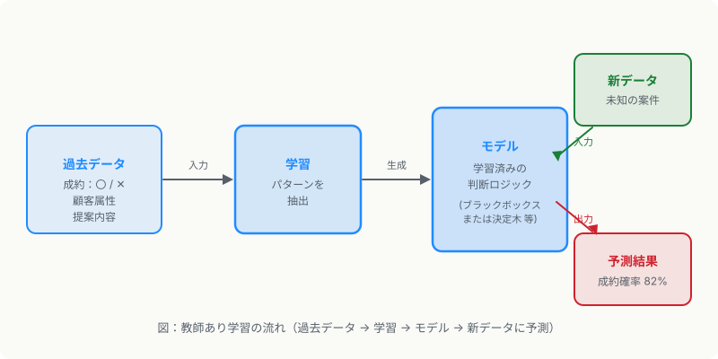

第3章 機械学習
この章の要点
- 機械学習はデータからパターンを自動的に学ぶ仕組みで、教師あり・教師なし・強化学習の3種に大別される
- 「成約しやすい組み合わせ」の予測は教師あり学習の典型例だが、学習データの品質が精度を直接左右する
- ゴミを入れたらゴミが出る（GIGO）——ラベルノイズや交絡因子がモデルを壊す仕組みを理解することが実務では特に重要
機械学習とは
機械学習（machine learning）とは、人間がルールを書かずに、データから判断のパターンを自動で学ぶアプローチです。ルールベースが「if 年収500万円以上 then 承認」と書くのに対し、機械学習は「大量の過去データを見せ、承認パターンを自力で見つけさせる」という発想の転換です。
機械学習は大きく3つに分類できます。それぞれの特徴と使いどころを整理します。
3つの学習方式
教師あり学習（supervised learning）
教師あり学習（supervised learning）は、「入力」と「正解ラベル」のペアを大量に与え、その対応関係を学ばせる方法です。メールが「迷惑メール／正常」どちらかを人間がラベル付けしたデータを学習させれば、新しいメールを自動分類できるようになります。
代表的なタスクは2つあります。回帰（regression）は数値を予測し、分類（classification）はカテゴリを判別します。「この案件の成約確率は何パーセントか」は回帰、「成約するかしないか」は分類です。

教師なし学習（unsupervised learning）
教師なし学習（unsupervised learning）は、正解ラベルを与えず、データの中から自力で構造やグループを発見します。顧客データを渡すと「購買頻度が高いグループ」「価格感度が高いグループ」などのセグメントを自動で作るクラスタリング（clustering）が代表例です。
正解が存在しない探索的な分析に向いています。「どんなパターンがあるか分からないが、まず構造を把握したい」という場面で活躍します。
強化学習（reinforcement learning）
強化学習（reinforcement learning）は、エージェントが環境と試行錯誤しながら、長期的な報酬を最大化する行動を学びます。囲碁AI（AlphaGo）やゲームAI、ロボット制御の分野で活用されています。ビジネスの現場での直接活用は限定的ですが、LLMの精度チューニングにも応用されています。
| 方式 | 必要なもの | 得意な場面 | ビジネス例 |
|---|---|---|---|
| 教師あり学習 | 正解ラベル付きデータ | 予測・分類 | 成約予測、スパム検知、与信審査 |
| 教師なし学習 | ラベルなしデータ | 構造発見・セグメント | 顧客クラスタリング、異常検知 |
| 強化学習 | 環境と報酬設計 | 逐次意思決定 | 広告入札最適化、ゲームAI |
ケーススタディへの伏線：成約予測モデルの例
営業・人材サービス領域で「この組み合わせは成約しやすいか」を予測するモデルを作る場合、教師あり学習の分類タスクとして設計します。入力特徴量は「求人の職種・給与レンジ・立地」「求職者のスキル・年齢・希望条件」などです。過去の成約データにラベル（成約〇・不成約✕）を付けて学習させます。
しかしこのアプローチには落とし穴があります。それが次のセクションで扱うデータ品質の問題です。
実務のポイント
モデルの精度は、アルゴリズムの選択よりもデータの品質に大きく依存します。同じデータで複数のアルゴリズムを試して精度差が小さいなら、データ整備に時間を投じる方が効果的です。
データ品質の問題：GIGO（Garbage In, Garbage Out）
機械学習モデルは、学習データに含まれるパターンしか学べません。「GIGO（ゴミを入れたらゴミが出る）」は、この限界を端的に表した格言です。データ品質の問題は大きく3種類に分けられます。
ラベルノイズ
ラベルノイズ（label noise）は、正解ラベルに誤りが混ざっている状態です。成約データの入力漏れ、担当者の主観によるラベル付けのブレ、システム連携の不具合による誤記録などが原因です。ラベルが10%誤っていれば、モデルはその誤りを「正解」として学んでしまいます。
交絡因子の混入
交絡因子（confounding factor）とは、本来の原因とは無関係だが結果と相関してしまう変数のことです。たとえば「担当営業マンが優秀かどうか」という変数が学習データに入っていないと、その担当者が持つ案件の特性がモデルに「成約しやすい特徴」として誤って学習されます。
外的要因の混入
景気変動、競合の動向、パンデミックによる採用凍結——こうした外的な事象が「不成約」の原因になっているのに、学習データ上ではその案件の特徴が「不成約の原因」として記録されてしまいます。モデルは組み合わせの問題と外的要因の問題を区別できません。
⚠ 第6章への重要な伏線
「本来は悪くない組み合わせなのに、外的要因で不成約になった案件」と「本当に組み合わせが悪くて不成約になった案件」が学習データの中に混在すると、モデルは両者を区別できません。このラベルの濁りが、成約予測モデルの精度低下の核心的な原因です。第6章のケーススタディでは、この問題にどう対処するかを具体的に検討します。
機械学習の限界を知ること
機械学習は「データに存在するパターン」を学ぶ道具です。データにないパターンは学べません。また、学習データの分布と実運用データの分布がずれると精度が落ちます（分布シフト（distribution shift））。定期的な再学習と品質監視が不可欠です。
次章では、機械学習の中でも特に表現力が高い深層学習と、それを応用した生成AIについて整理します。
もっと知りたい人へ
- Google / Machine Learning Crash Course — Googleが無料公開する機械学習入門。教師あり学習の概念から実装例まで、視覚的に整理されている（英語）
- scikit-learn / ユーザーガイド — Pythonの代表的な機械学習ライブラリの公式ガイド。3つの学習方式の分類と各アルゴリズムの整理に最適
- 総務省 / 情報通信白書 — AIと機械学習の普及動向、日本企業の活用事例を政府統計とともに把握できる